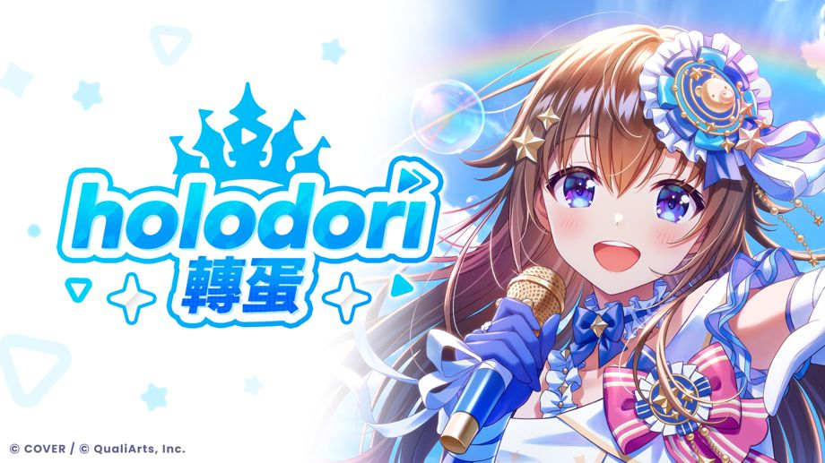

54名holo成員閃耀登場的「holodori轉蛋」開始！
◆活動期間
發送開始～
關於Holo貼紙
重複獲得已綻放至最後階段的3★、4★成員時，可獲得「Holo貼紙」。
超過使用期限的「轉蛋Pt」亦可兌換「Holo貼紙」。
可透過［商店］→［兌換Holo貼紙］的步驟，使用Holo貼紙兌換各種道具。
請依序點選［說明］→［商店］→［關於兌換Holo貼紙］查看詳情。
關於特殊Holo貼紙
重複獲得5★成員時，可獲得「特殊Holo貼紙」。
重複獲得已綻放至最後階段的5★成員時，可獲得更多「特殊Holo貼紙」。
可透過［商店］→［兌換特殊Holo貼紙］的步驟，使用特殊Holo貼紙兌換各種道具。
請依序點選［說明］→［商店］→［關於兌換特殊Holo貼紙］查看詳情。
注意事項
・活動期間與內容，可能在未經預告的情況下變更。
・請依序點選各轉蛋活動的［轉蛋畫面］→［轉蛋詳情］→［注意事項］查看此轉蛋活動相關注意事項。
・請依序點選各轉蛋活動的［轉蛋畫面］→［轉蛋詳情］→［出現機率］查看此轉蛋活動相關資訊。